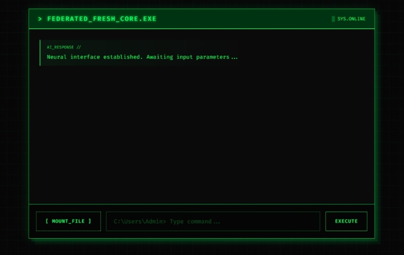
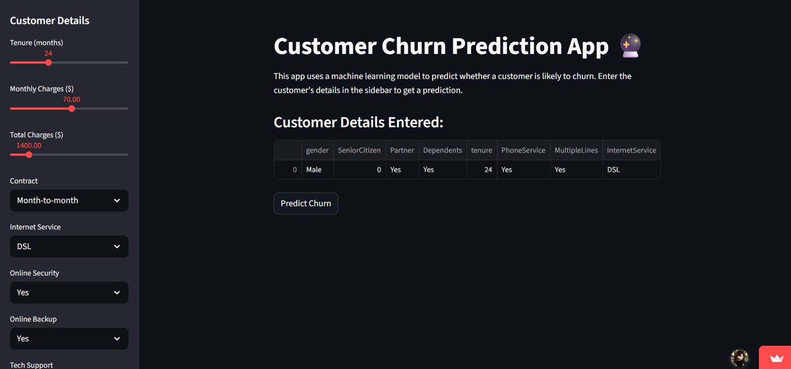
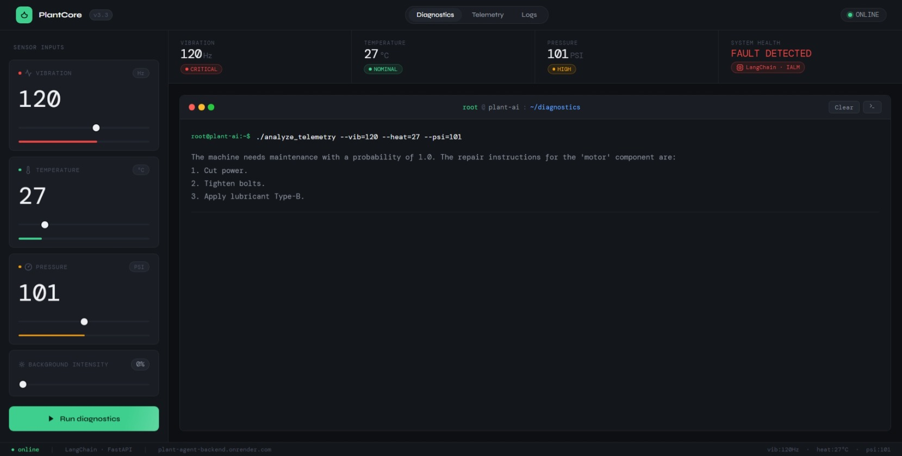
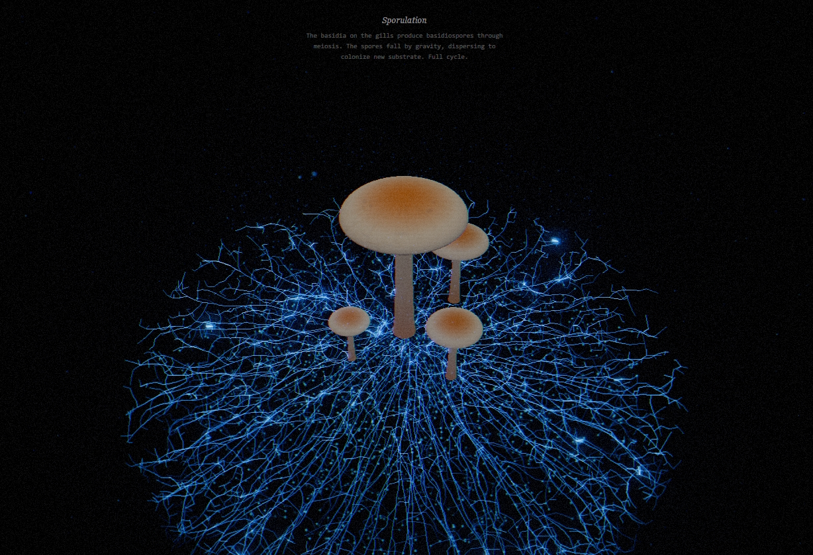
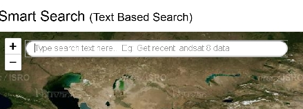
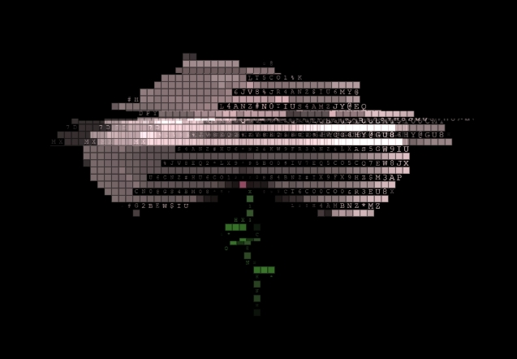
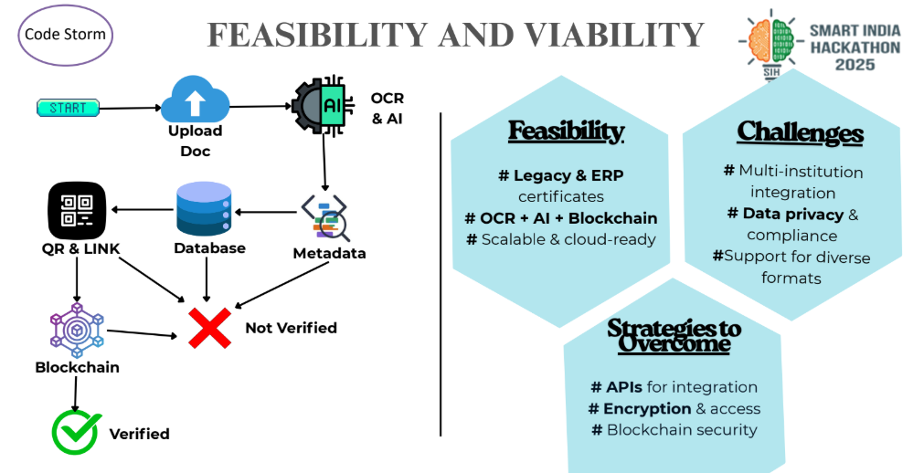

AIML Researcher • Software Developer
Hi, I'm
Anushka!
//
An IT undergrad (B.Tech) student from India and an aspiring ML/DL Engineer with strong research interests in AIML. I build AI systems that see, understand, and reason, exploring how intelligent agents solve real-world challenges.
Proud member of Google's Women Techmakers and IEEE Robotics & Automation. Alongside my passion for AI/ML, I have hands-on experience in Web Development and DSA.
"Currently seeking opportunities in Software Engineering, Machine Learning, and Data Science to build impactful, data-driven solutions."
 SAY HI!
SAY HI!
Research & Publications

Architectural Paradigms for Sovereign AI: Mitigating API Fragility through Quantized Low-Rank Adaptation and 1.58-bit Ternary Models (Officially lived on SSRN)

A rigorous methodology for deploying Sovereign AI through Small Language Models (SLMs) to mitigate API fragility. Investigates the synergy between 4-bit NormalFloat (NF4) quantization, native 1.58-bit ternary architectures, and Low-Rank Adaptation (LoRA) for specialized domains.
- ▹Achieved a 93% reduction in inference OpEx for 7B–14B parameter models.
- ▹Demonstrated a TCO break-even at 450 million tokens vs. proprietary APIs.

Isolating Synthetic Fingerprints: A Frequency-Domain Approach to Robust Deepfake Detection using 2D FFT and Lightweight CNNs
A novel, lightweight deepfake detection engine that isolates synthetic fingerprints in the frequency domain. Employs a micro-blur preprocessing pipeline to suppress superficial high-frequency spatial noise, followed by a 2D FFT to extract underlying spectral magnitude maps.
- ▹Achieved 99.12% accuracy on FaceForensics++ and 98.45% on Celeb-DF v2.
- ▹Outperforms spatial baselines at 45 FPS real-time inference on edge devices.
Some of My Projects

DeepfakeDetector: Frequency-Based AI Inference Engine

- ▹Frequency-domain AI engine using 2D FFT and ResNet-18 to identify synthetic fingerprints invisible to standard spatial-only CNNs.
- ▹Achieved <1.8s end-to-end inference latency via distributed React/FastAPI/Docker stack.
- ▹Integrated 3×3 Gaussian Micro-blur filter to neutralize sensor noise.

Deweathering Engine
- ▹Full-stack React + FastAPI app using Robust PCA to extract clean text from degraded documents.
- ▹95% automated parameter tuning via custom Adaptive Regularization heuristic.
- ▹Full document restoration in under 2.5 seconds.

iNaturalist Clumper: Geospatial Data Engineering
- ▹Python CLI grouping biodiversity observations into clusters on 5km/3hr spatio-temporal thresholds.
- ▹Incremental sync engine tracking state via timestamps, reducing API latency.
- ▹Dynamic cluster merging logic for overlapping observation windows.

DCO6: Polyphonic VST3 Synthesizer
- ▹6-voice polyphonic VST3 synthesizer built from scratch in C++ with the JUCE framework.
- ▹4-pole Moog-style ladder filter, BBD stereo chorus, and independent ADSR envelopes.
- ▹Real-time FFT spectrum analyzer with custom UI components.

Federated Fresh: Hybrid AI Orchestration Terminal
- ▹Hybrid AI routing engine orchestrating local ChromaDB retrieval, live web-search, and direct LLM inference.
- ▹Reduced local memory overhead by 75% by offloading embeddings to the cloud.
- ▹Asynchronous RAG pipeline using FastAPI BackgroundTasks for zero-lag UI.

Customer Churn Prediction
- ▹End-to-end ML model predicting customer churn — 67% recall rate and AUC 0.82.
- ▹Interactive Streamlit web app for real-time predictions deployed publicly.

PlantCore: Autonomous Maintenance AI
- ▹Autonomous AI diagnostic agent for industrial motor failure prediction.
- ▹Hybrid ML pipeline: XGBoost for fault detection + Llama 3 (Groq) for repair protocols.
- ▹High-fidelity terminal UI with real-time telemetry streaming.

Psilocybe Cubensis: 3D Simulation
- ▹Real-time procedural 3D mushroom lifecycle simulation using Three.js.
- ▹Space Colonization Algorithm with 3D Spatial Hash Grid handling 40,000 mycelial nodes.
- ▹Cinematic post-processing: Unreal Bloom, procedural geometry generation.

NLP Smart Search for Satellite Data
- ▹Text and voice-based intelligent search system for satellite data ordering.
- ▹NLP parsing of satellite-specific terminology to interface with databases.

Peonia: Generative 3D Animation
- ▹In-browser 3D peony flower with continuous procedural blooming/wilting lifecycle.
- ▹Custom 3D pipeline using rotation matrices and Painter's Algorithm — no WebGL.
- ▹Multi-modal post-processing: solid pixels → particle dots → real-time ASCII mapping.

Digi-Pramaan — SIH '25 Semi-Finalist
- ▹Decentralized academic authenticity platform combining OCR & AI for automated data extraction with Ethereum Blockchain for immutable record-keeping.
- ▹MetaMask wallet integration for authenticated and tamper-proof certificate issuance. Top finalist out of 250+ teams in SIH 2025 internal round.
These are just some highlights. Explore all my repositories, experiments, and works-in-progress on GitHub.
 VIEW ALL PROJECTS ON GITHUB
VIEW ALL PROJECTS ON GITHUB
Experience
Technical Arsenal
Languages
 Java
Java
 SQL
SQL
Libraries & Frameworks
 XGBoost
XGBoost
Tools & Platforms
 Tally
Tally
 VHDL
VHDL
Memberships & Affiliations
Education
Achievements & Certifications

IndiaFirst Life (Bank of Baroda)
Unexpectedly shortlisted via Foundit and successfully cleared an interview for a Business Administration/Management role as a 6th-semester undergrad. Secured a 2-month training program with a stipend, leading to a full-time offer — respectfully declined to focus on 6th-semester studies.

HackerRank
Gold Level (5 Star) in Python, Silver Level (3 Star) in Java.

SIH '25 Semi-Finalist
'Digi-Pramaan' — Top finalist out of 250+ teams in the college internal round of Smart India Hackathon 2025.

Problem Solving
Solved 350+ problems on LeetCode and HackerRank, improving algorithmic thinking and coding efficiency.

Extracurricular Leadership
Active member of Samaritans social club since first year — community initiatives, collaborative events, debates, and quiz competitions.

Certifications
- ▹Data Analytics Job Simulation — Deloitte Australia
- ▹Software Engineering Job Simulation — JPMorgan Chase & Co.
- ▹Introduction to Agent Skills — Anthropic Academy
- ▹Train & Manage ML Model with Azure — Microsoft
- ▹Understand Data Science for ML — Microsoft
- ▹Python for Data Science — IBM
- ▹GenAI Powered Data Analytics Simulation — Tata
Resume
Want a detailed breakdown of my academic background, technical skills, and professional experience? View or download my complete resume below.
DOWNLOAD RESUME.PDFInitialize Connection
Always open to discussing software engineering opportunities, ML research, and innovative ideas. Let's execute a handshake.
PING ME


© 2026 Anushka Das · End of File.